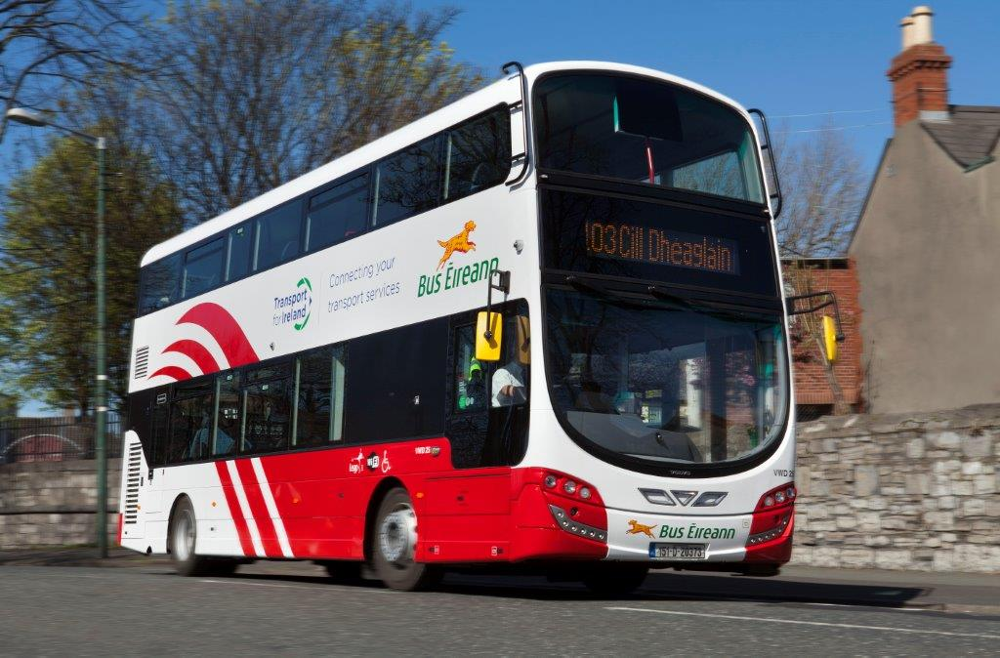
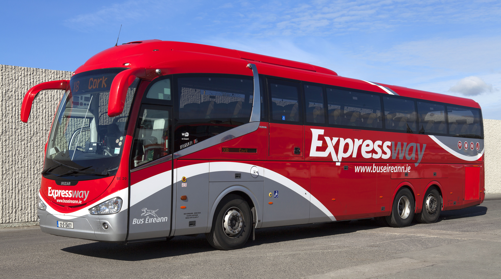

Timetables
Home
Timetables
Services
About Us
 
Bus Eireann Local and Commuter Services
100X
Dublin to Dundalk
101N
Dublin to Drogheda
Nightrider
101X
Dublin-Drogheda-Termon Abbey
101
Dublin-Drogheda
103
Dublin-Ashbourne-Ratoath
103X
Navan/Duleek-Ashbourne-Ratoath-Dublin
105
Drogheda-Ashbourne-Ratoath-Blanch
105X
Duleek-Ashbourne-Ratoath-Dublin
108
Dublin-Kells-Bailieboro
109
Dublin-Navan-Kells-Virginia-Cavan
109N
Dublin-Ratoath-Dunshaughlin-Navan
Nightrider
111
Dublin-Trim-Athboy-Granard
111X
Dublin-Athboy-Delvin-Clonmellon
115/115A
Dublin-Kilcock-Enfield-Mullingar
120
Dublin-Clane-Prosperous-Edenderry-Tullamore
123
Dublin-Clane-Prosperous-Robertstown
124
Dublin-Portloaise
126
Dublin-Kill-Naas-Newbridge-Kildare
126N
Dublin-Naas-Newbridge-Clane
Nightrider
130
Dublin-Kilcullen-Athy
132
Dublin-Tullow-Bunclody
132
Dublin-Tullow-Bunclody
Thursday Only
133
Dublin-Ashford-Wicklow
163
Dublin-Drogheda-Donore
Dublin Expressway Services
X1
Dublin-Newry-Belfast
2
Dublin-Arklow-Gorey-Enniscorthy-Wexford
4
Dublin-Waterford
X7
Dublin-Kilkenny-Clonmel
X8
Dublin-Cork
12X
Dublin-Limerick
13
Limerick-Tralee(Dublin connection from 12X)
14
Limerick-Killarney(Dublin connection from 12X)
20
Dublin-Athlone-Galway
21
Dublin-Westport
22
Dublin-Ballina
23
Dublin-Sligo
30
Dublin-Donegal
32
Dublin-Letterkenny
33
Dublin-Derry